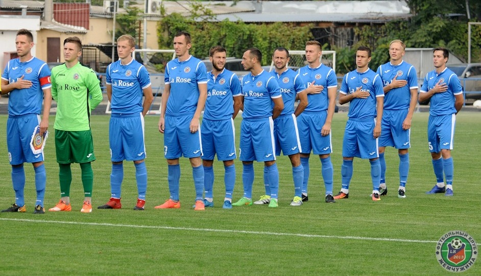
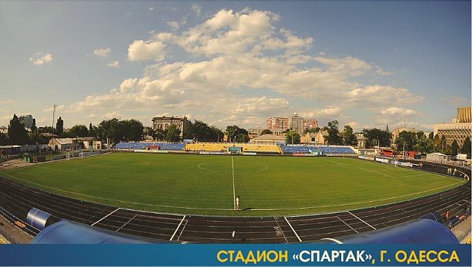

История клуба

Футбольный клуб «Жемчужина» был создан в августе 2013 года. Состав команды сформировали выпускники одесских футбольных школ. На начальном этапе за команду играли ветераны одесского футбола, друзья президента клуба, Александр Бабич, Геннадий Нижегородов и Виталий Руденко. Главным тренером клуба стал бывший защитник одесского «Черноморца» и криворожского «Кривбасса» Денис Колчин.
В сезоне 2014/15 команда участвовала в зимнем чемпионате Одессы и выиграла турнир, сенсационно обыграв в финале второлиговую «Реал Фарму».
В 2015 году клуб дебютировал в любительском чемпионате Украины, войдя в 8 лучших команд турнира, а в следующем сезоне повторил свое достижение, дойдя до четвертьфинала турнира.
Летом 2016 года клуб получил профессиональный статус и был заявлен во Вторую лигу. По итогам чемпионата Украины 2016/17 во Второй лиге команда становится чемпионом и в сезоне 2017/18 впервые в своей истории сыграет в Первой лиге чемпионата Украины.
Стадион

• Вместимость: 4800 зрителей
• Покрытие: трава
• Прежние названия: 1928г. - Стадион им. 10-летней годовщины ВЛКСМ
• Местоположение: Украина, 65012, г.Одесса, ул.Канатная, 79
• Владелец: Муниципалитет Одессы
• Домашняя команда: ФК «Жемчужина» (футбол), «Кредо-63» (регби)
• Размеры поля: 105×68 метров
"Спартак" - футбольный и регбийный стадион в Одессе. На нем проводят свои домашние матчи футбольный клуб "Жемчужина" и регбийный "Кредо-63". Во время реконструкции стадиона "Черноморец" в 2009 - 2011 году здесь проводил свои домашние матчи футбольный клуб "Черноморец". Также здесь выступал в советские времена одесский "Автомобилист", "Черноморец" ("Пищевик") выступал здесь в 1945 и 1946 годах и играл матч Кубка Украины в 2001 году.. Во времена независимости здесь проводили домашние матчи дублеры "Черноморца", а также СК "Одесса", " Динамо-СКА", "Пальмира", "Черноморец-2", "Днестр" из Овидиополя (в марте - июне 2011 года). Кроме того, на стадионе регулярно проходят матчи городских и областных соревнований.
Рекорд посещаемости - 15 000 зрителей на матче между "Пищевиком" и московским ВВС, который состоялся 9 мая 1946 года.
Стадион был открыт 8 ноября 1928 года как Стадион имени 10-летия ВЛКСМ. К открытию в 1936 Стадиона имени Косиора (в настоящее время "Черноморец") считался самым современным стадионом города, вмещал около 10 тысяч зрителей и был домашней ареной для сборной Одессы. После войны на стадионе два года (с 1945 до 1946) играл одесский "Пищевик" (предшественник "Черноморца").
В 1940-х и 1950-х годах на стадионе базировалась известная футбольная школа, выпускниками которой были Юрий Заболотный, Константин Фурс и другие. В 1960-х стадион стал третьим за вместимостью в городе после стадионов ЧМП и СКА. На нем выступала команда класса "Б" "Автомобилист".
Во время строительства Театра музыкальной комедии в конце 1970-тых было предложено разрушить стадион, проложив на его месте бульвар. Однако из-за протестов одесситов идея была отклонена. В 1980-х годах была проведена масштабная реконструкция стадиона, после которой стадион получил две отдельных трибуны вместо подковообразных и стал вмещать 6 000 зрителей.
В связи с реконструкцией стадиона "Черноморец" к Евро-2012 5 февраля 2009 года бывший мэр Одессы Эдуард Гурвиц принял решение о передаче стадиона "Спартак" в безоплатную аренду ФК "Черноморец" при условии реконструкции стадиона средствами клуба. За безвозмездную аренду спорткомплекса (на время строительства стадиона в парке Шевченко) руководство клуба обязалось провести его модернизацию.
К первому матчу Премьер-лиги на обновленном стадионе, который состоялся 14 марта 2009 года (матч украинской премьер-лиги между ФК «Черноморец» и ФК «Харьков»), были установлены индивидуальные сидения, смонтирована радиотрансляционная система и табло. За месяц был полностью заменен газон и приведено в соответствие со стандартами раздевалки, судейские комнаты и другие подтрибунные помещения.

 Арсенал
Арсенал Полтава
Полтава Ингулец
Ингулец Колос
Колос Десна
Десна Гелиос
Гелиос Авангард
Авангард Горняк-Спорт
Горняк-Спорт Рух
Рух Оболонь-Бровар
Оболонь-Бровар Балканы
Балканы МФК Николаев
МФК Николаев Жемчужина
Жемчужина Кремень
Кремень Нефтяник-Укрнефть
Нефтяник-Укрнефть ПФК Сумы
ПФК Сумы Волынь
Волынь Черкасский Днепр
Черкасский Днепр
©2017
Проект был созданОпрей Николаем